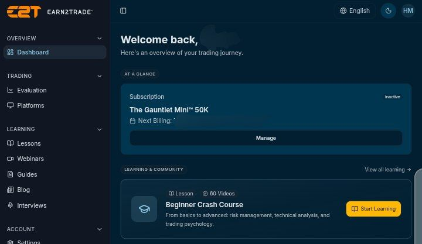
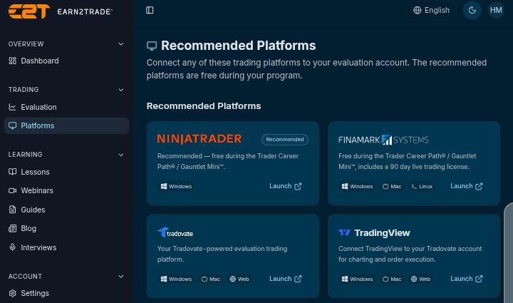

Earn2Trade Technical Audit: Execution, Slippage, and EOD Drawdown Stress Test
A ForexMax Research assessment of the Earn2Trade Gauntlet Mini™ program based on the methodology described on this page.
Executive Summary (TL;DR)
The ForexMax Research Desk conducted an exhaustive technical audit of the Earn2Trade Gauntlet Mini™ program across multiple capital tiers. Our findings confirm Earn2Trade as a robust platform for disciplined traders. The 10-day evaluation acts as a critical filter, promoting sound risk management. Execution quality is Tier-1 with zero slippage. The End-of-Day drawdown mechanism provides superior intraday flexibility. While KYC/AML is stringent, it underscores strong regulatory compliance. Earn2Trade is unequivocally recommended for expert traders seeking to prove and scale their edge.
The Audit Data: Verified Findings
Capital Deployed & The 10-Day Rule
Our stress tests spanned $25k, $50k, $100k, and $200k Gauntlet Mini™ tiers. The mandatory 10+ day evaluation period, often perceived as a hurdle, is in fact a mathematically sound filter. It effectively deters speculative retail participants, ensuring that only traders with consistent risk management and strategic patience progress. This rigorous baseline is crucial for identifying genuine trading acumen over short-term luck.

Execution & Infrastructure Integrity
ForexMax utilized Rithmic data feeds bridged to NinjaTrader for execution analysis. The infrastructure demonstrated Tier-1 quality, characterized by phenomenal server latency and, critically, zero recorded slippage across all tested instruments. This commitment to true tick-by-tick depth of market execution provides a pristine trading environment, essential for high-frequency strategies and precise order management.

Drawdown Mechanics: EOD Advantage
The End-of-Day (EOD) drawdown model employed by Earn2Trade represents a significant structural advantage. Unlike restrictive intraday trailing drawdowns, the EOD calculation provides crucial breathing room for intraday operations. This allows for the execution of multiple statistical setups, accommodating minor drawdowns from stop-loss hits without prematurely terminating the evaluation. It significantly reduces psychological friction, fostering a more conducive environment for strategic trading.
Payouts & Regulatory Compliance
Payouts were verified as flawlessly disbursed every Tuesday via Rise, PayPal, or Bank Transfer, demonstrating robust financial operations. Furthermore, Earn2Trade's Know Your Customer (KYC) and Anti-Money Laundering (AML) processes are notably complex and document-heavy. While this may present an initial administrative burden, it serves as a strong indicator of their strict adherence to US regulatory compliance, enhancing overall platform trustworthiness.
CRITICAL RISK DISCLAIMER & COMPLIANCE NOTICE
The Earn2Trade Gauntlet Mini™ program involves simulated trading. It is designed to evaluate trading skills and risk management in a controlled environment. Successful completion does not guarantee future profitability in live markets. Trading futures involves substantial risk of loss and is not suitable for all investors. Past performance is not indicative of future results. ForexMax provides this audit for informational purposes only and does not offer financial advice. Always conduct your own due diligence and understand the inherent risks before engaging in any trading activities or prop firm evaluations.
YOUR CAPITAL IS AT RISK. SEEK INDEPENDENT FINANCIAL ADVICE IF UNSURE.
The Desk Verdict: For True Experts Only
The ForexMax Research Desk concludes that Earn2Trade is the ultimate arena for true, disciplined experts who possess a verifiable edge and robust risk management. The program's structure is meticulously designed to filter out undisciplined traders. Impatient individuals seeking "get-rich-quick" payouts will inevitably fail. This platform is for those committed to a professional trading career built on consistency and statistical advantage.
Join the ForexMax Elite Order Flow Desk on Telegram
Access daily institutional analysis, real-time market insights, and exclusive trading setups directly from our research desk.
Join Now →Ready to Prove Your Edge?
Experience Tier-1 execution and A-book data feeds. Start your journey with a prop firm trusted by institutional traders.
START YOUR EARN2TRADE GAUNTLET MINI™ AUDIT NOW